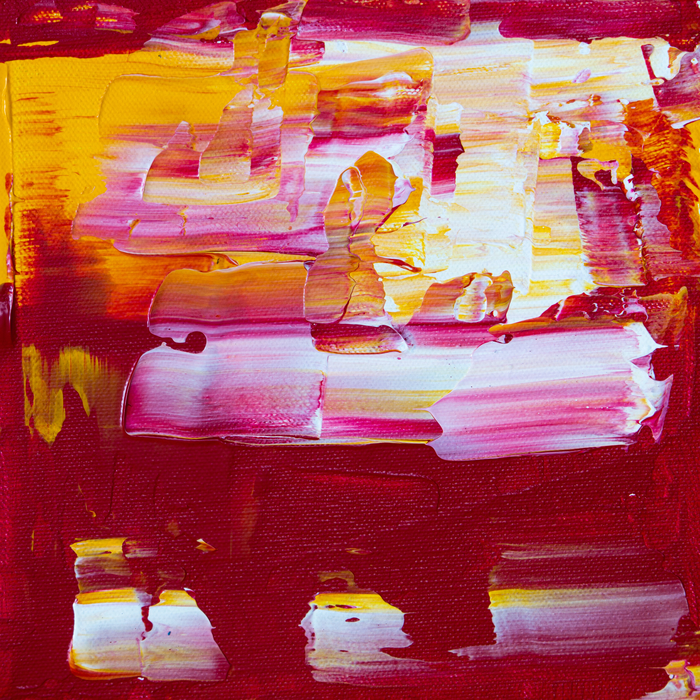
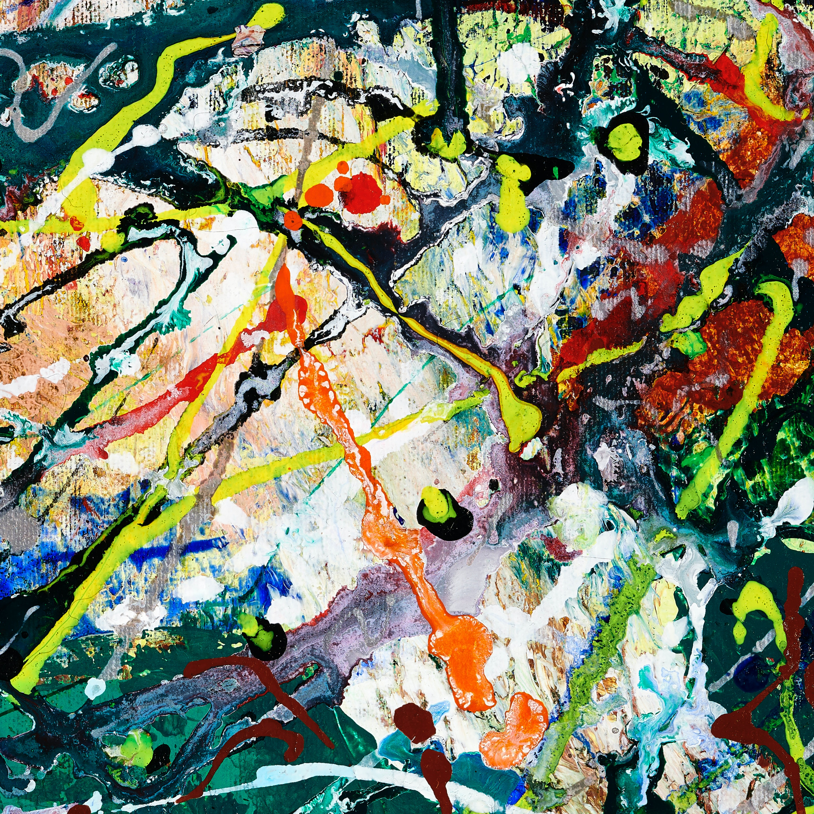
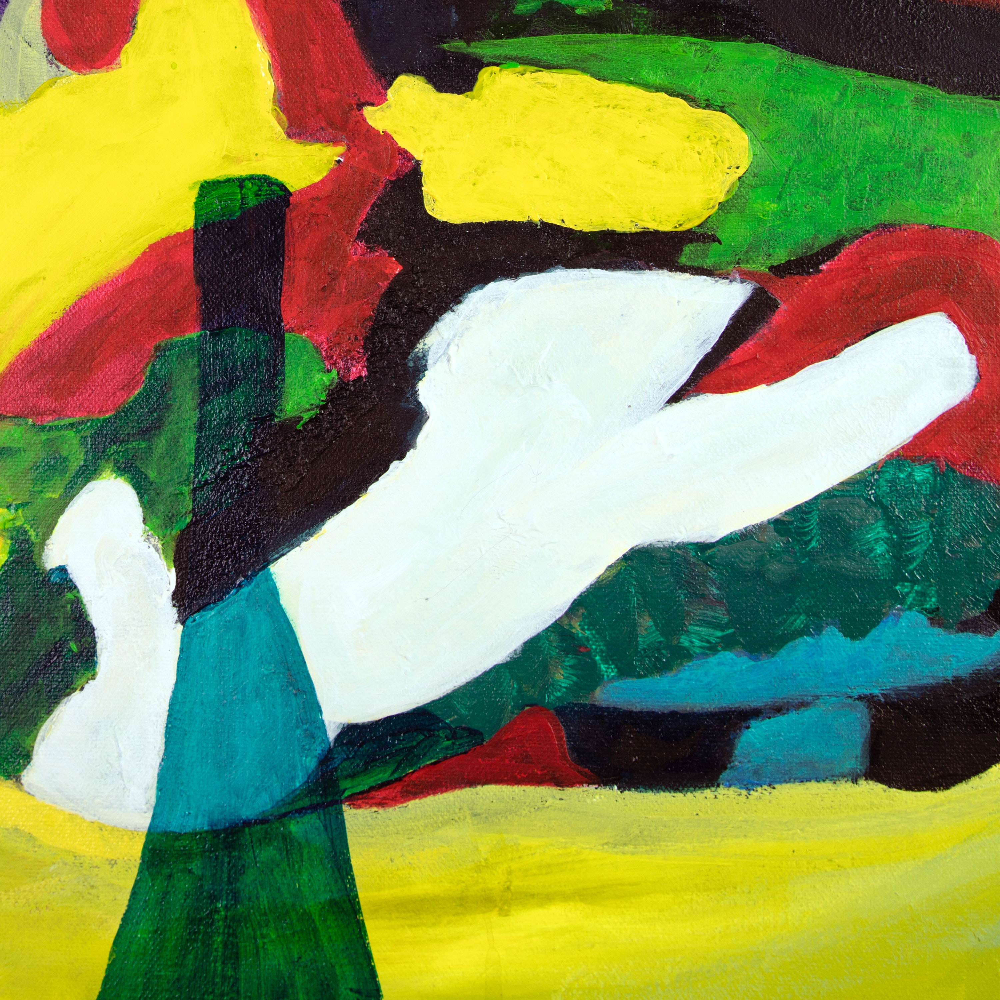
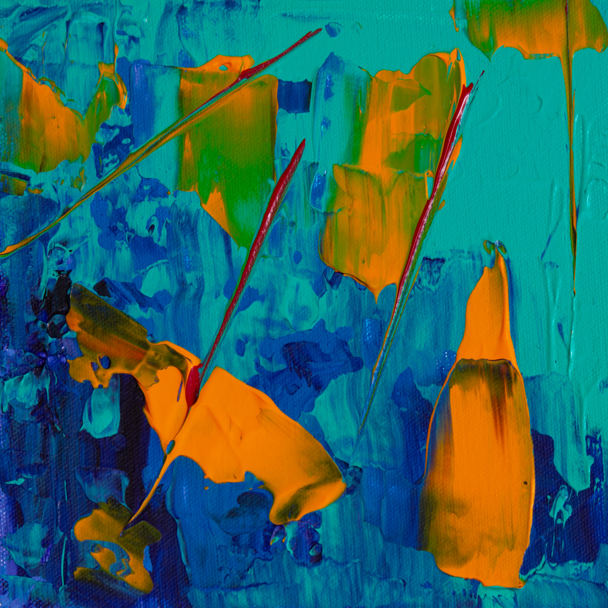

Header Logo
Link 1
Link 2
Link 3
Yawara Jitsu
Defensa personal aaaaaaaa aaaa aa a aaa a a aa a a aa a científica. Pásate a formar parte de nuestra gran familia.
Unirse
Obras de arte creadas en el dojo
   
Una super frase en la que un miembro y practicante de Yawara Jitsu habla de las virtudes de este precioso arte marcial.
-Rodrigo Fernández Sánchez
Unirse